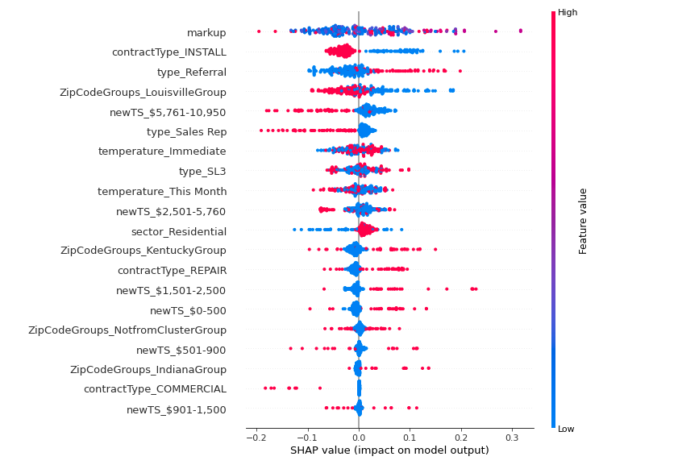

Overview
Purpose
I want to talk about SHAP. For my senior project/work I've had to use python's library shap to explain my random forest model. According to the creators of SHAP stands for SHapley Additive exPlanations. SHAP is a game-theoretic approach to explain the output of any machine learning model. It connects optimal credit allocation with local explanations using the classic Shapley values from game theory and their related extensions. (GitHub Link)
That's a lot to take in right? In plain words SHAP helps us and in my case helped me interpret my machine learning model with Shapley values. I want to take the time to show you how I used SHAP to explain my model. If you want to go more in depth about Game Theory & Shapley I suggest visiting Analytics Vidhya I'm just going to give a high overview on how to use this library. Then I'll explain shap values briefly.

Code
Here I'm going to share an example of how to use SHAP.
I used a Random Forest Classifier to predict the probablity of winning a job. So the first step is to create an instance of this model from sklearn's 'sklearn.ensemble' library and train it.
from sklearn.ensemble import RandomForestClassifier
rf = RandomForestClassifier()
rf.fit(X_train, y_train)
The next step is is to explain the model's prediction using shap.
import shap
explainer = shap.TreeExplainer(rf, data = X_train, model_output = 'probability')
shap_values = explainer.shap_values(X_train)
If we want to summarize the effects of some of the featues we can run this code:
shap.summary_plot(shap_values[1], X_train)
That code will produce this image:
This is how I would read that summary plot. The x-axis represents the feature's shap value and its impact on the target variable. It can either be positive or negative. Red means that there is a positive impact and that it's increasing the value of the target variable. The y-axis lists the model's features ordered by descending importance.
Another cool plot that shap can create is a 'Force Plot.' A force plot you can view a prediction's explanation horizontally. It can show how each feature is contributing and pushing the target's variable output.
# The first prediction's explanation
shap.force_plot(explainer.expected_value[0], shap_values[0][0], X_train.iloc[0, :], link='logit')
I used these plots to explain to my boss how each of the features are affecting the probability of winning or losing. Each prediction is unique so it's nice to see how each feature is affecting the probability in that specific instance.
Shap Values
Let's talk about shap values now. You've already seen how to run the code and produce two set's of plots now I'm going to try and explain what shap values are.
In simple words shap values are a measurment of the impact of a feature taking into consideration with or without the interaction of all the other features.
The math is quite complicated I would say but let's reaiterate what I've just said: The shap value is the impact of the feature to the target variable. Thankfully someone has come before us to code all the math so on the backend the equation is calculating the difference of the predictions with and with out the feature and with and without the interactions of the other features.
Conclusion
I'm not an expert in game theory, programming, or shap values but I am thankful for people who have put in the time to make amazing tools so that the rest of use can enjoy them. I feel like in R packages and Python Libraries we focus a lot on the numbers and SHAP provides a nice way of visualizing the results. Thank you for reading this post of mine!